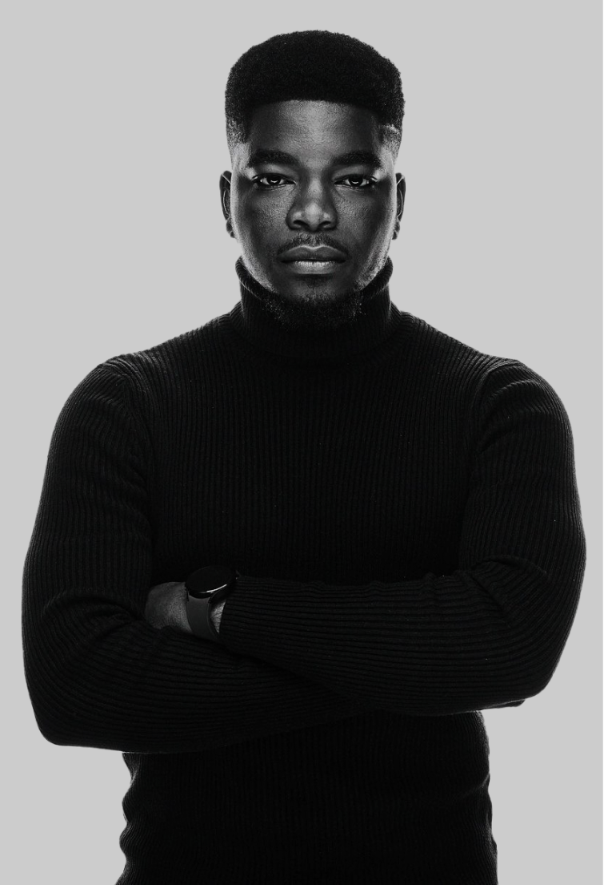
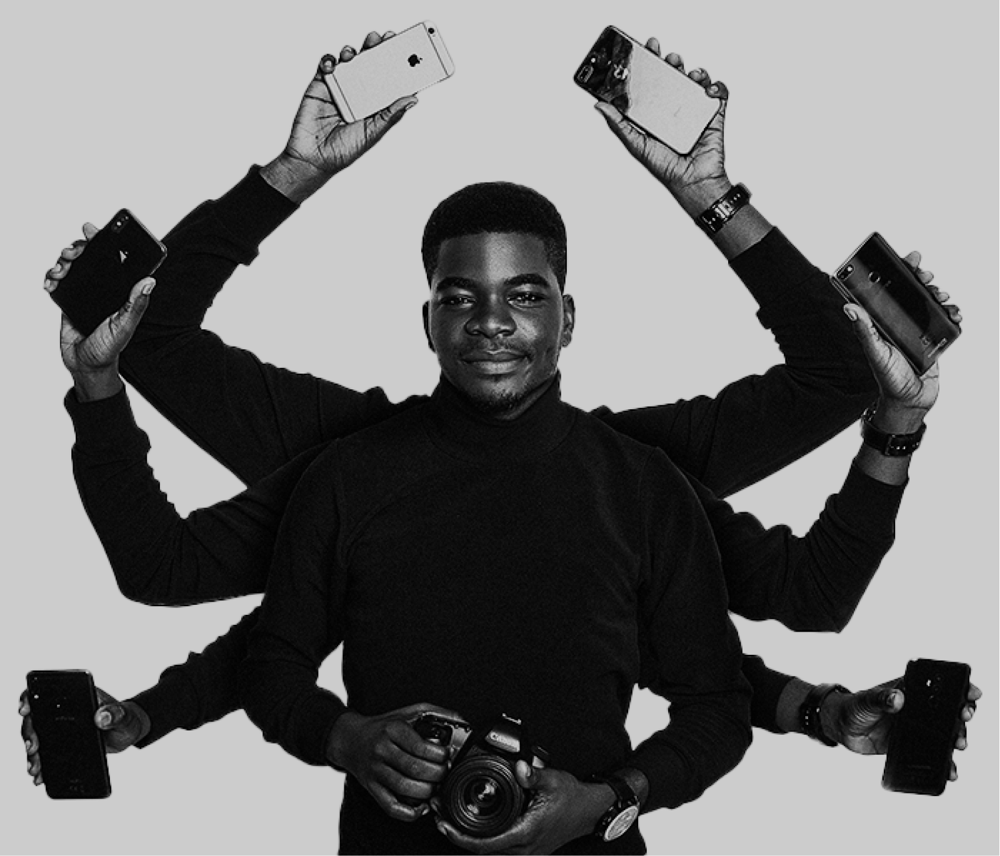

I’m a visual storyteller, finance and technology video producer with 200,000 subscribers. I have a background in economic analysis, brand communication and specialise in mobile technology, personal finance and the Nigerian economy.

The
Storyteller


The
Influencer
I’m an Ambassador for Musicbed one of the largest music licensing companies for content creators. I’ve been featured on YNaija’s Establishment List of Top 50 Nigerians to look out for 4 years consecutively, BellaNaija’s Top 10 List of Video Creators on YouTube, Channels TV and more. I’m an audience of about 300,000 followers and over 13 million video views from making unique weekly technology & finance videos for the African space and globally.
Visit Channel